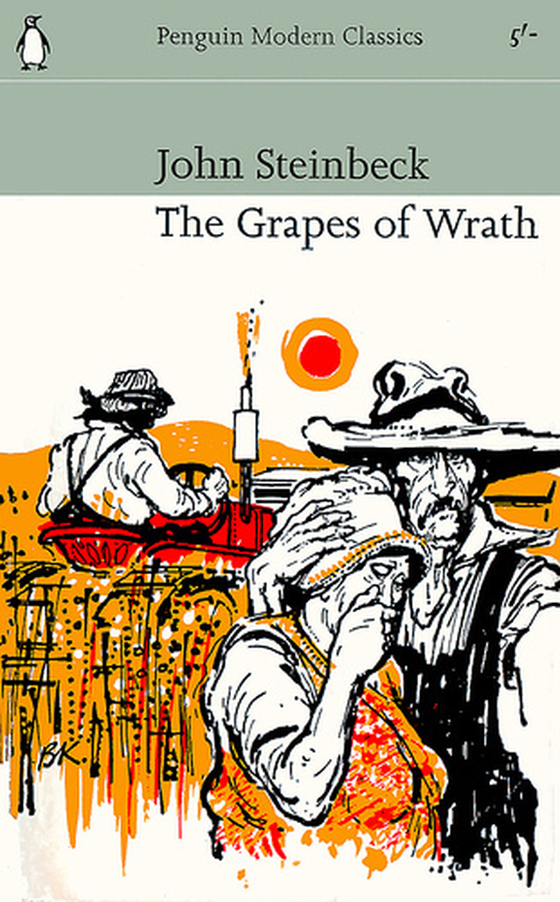

총기 자유화가 되면 갑질이 사라질까
게시: 2018-07-28T08:19:57+09:00
생각해보면 총기 소유가 자유화되면 우리나라의 갑질 문화도 좀 사라지지 않을까 합니다. 총으로는 힘없는 할머니조차도 사람을 해칠 수 있으니까, 남들에게 모질게 대할 때 ‘혹시 저 사람이 빡쳐서 총들고 찾아오지는 않을까?’라고 한번쯤 멈칫 할테니까요. 동네 조폭이건 월세를 4배 올려달라는 악덕 건물주이건 503의 친위 쿠데타군이든지요. 저만 해도 미국에서 운전할 때는 굉장히 얌전하게 운전을 하는 편인데, 가장 큰 이유가 혹시라도 빡친 상대 운전사가 총들고 내려서 “Hey you 어머니...”할까봐 겁이 나서 그렇습니다.

분노의 포도, 존 스타인벡 작 (배경 1930년대 미국) ------------------- (다른 주에서 몰려온 굶주린 농민들이 막노동 일거리를 찾아 캘리포니아에 오지만, 그들을 기다리는 건 부유한 캘리포니아 주민들의 냉대와 박해, 그리고 자본가들의 조직적인 노동력 착취 뿐입니다. 부당하게 낮은 임금에 항의하거나, 노동조합 비슷한 것을 만드려는 노동자들은 무조건 부랑자나 빨갱이로 몰아서 보안관이 감방에 집어넣는 형국입니다. 일부 동네 주민들은, 무장 자경단을 만들어서 동네 입구에 외지에서 온 떠돌이 농민들이 아예 마을에 들어오지 못하도록 쫓아내기까지 합니다.) 놈들은 좀 혼을 내줘야 해 ! 얌전히 하고 있도록 만들지 않으면 무슨 짓을 할런지 알 수 없단 말이야 ! 제기랄 남 쪽의 검둥이들만큼이나 위험한 놈들이거든 ! 이놈들이 뭉쳐 봐. 끝장이야. 누구도 억누르지 못하게 될 걸 ! (실례 - 로렌스빌에서는 무단으로 한군데에 정착하려고 한 자에게 보안관 대리가 퇴거할 것을 명령했으나 그가 강경하게 반항했기 때문에 실력을 행사하지 않을 수 없었다. 그러자 그 자의 열한 살짜리 아들이 22구경 라이플로 그 보안관 대리를 사살했다.) 방울뱀 같은 놈들 ! 놈들을 상대할 때는 사정보지 말아. 대들거든 그 자리에서 쏴죽여. 애새끼가 경찰을 살해할 정도니 어른놈이 무슨 짓을 할지 누가 알아 ? 요는 놈들보다 억세야 한다는 거다. 거칠게 다뤄. 협박해야 해. 협박해도 무서워하지 않는다면 어떡하지 ? 버티고 대들면서 쏴 대면 어떡하지 ? 그런 놈들은 어릴 때부터 총을 주무르던 놈들이야. 총은 놈들 자신의 일부분이나 다름없어. 무서워하지 않으면 어떡하지 ? 언젠가 놈들이 대오를 짜서, 흡사 롬바르디아 인이 이탈리아에서, 게르만 족이 고올에서, 터키 인이 비잔티움에서 했듯이 이 땅으로 몰려오면 어떡하지 ? 그네들도 역시 땅에 굶주리고 무기도 변변찮은 유목민들이었지만 놈들을 막지 못했단 말이야. ------------------------------------------------------------------------- 캘리포니아인들은 보안관을 앞세워 이런 떠돌이 농민들을 탄압합니다. 가장 흔한 것이, 보안관과 함께 가서 난민 캠프에 가서, 생계도 잇기 어려운 임금을 제시합니다. 그럴 때 법을 운운하며 부당함에 대해 따지는 사람이 나오면, 보안관이 나서서 얼토당토 않은 혐의를 뒤집어 씌우고 영장도 없이 무조건 체포해서 데려갑니다. 이렇게 체포된 사람은 부랑죄로 감옥으로 보내기도 하고, 간혹 몰래 살해해서 시골 도랑에 버리기도 합니다. 또 난민촌에 한밤중에 쳐들어가서 불을 질러 난민들을 쫓아내기도 합니다. 연방정부가 운영하는 국영 캠프에는 이런 식의 만행을 저지를 수가 없으므로, 그런 경우엔 일부러 끄나풀을 침투시켜 싸움을 일으키고는, 그 싸움을 핑계삼아 경찰력을 투입하여 국영 캠프를 뒤집어 놓는 일도 행사합니다. 떠돌이 농민들은 이러한 박해에 견디다 못해 논의를 시작합니다. ------------------------------------------------------------------------ "오아히오 주 에크런에서 일어난 사건을 나는 알고 있지. 고무 공장에서 있었던 이야기야. 싼 임금으로 일을 시킬 수 있다고 산골 놈들을 잔뜩 썼다지 않아. 그런데 이 사람들이 일어서서 노동조합에 가입했지 뭔가. 이게 탈이었다구. 그만 큰 소동이 벌어진 거야. 장사치다, 재향군인이다 하는 치들이 훈련을 시작하면서 짖어 대기 시작한 거지. "빨갱이들이다 !"하고 말이야. 그러곤 에크런에서 노동조합을 몰아내려 들기 시작한 거야. 목사가 그 일로 설교하고, 신문이 떠들어 대고, 고무회사에서는 곡괭이 자루를 마련한다, 최루탄을 사들인다, 야단법석이었지. 빌어먹을, 마치 그 산골 젊은놈들이 진짜배기 악마이기나 한 것 같은 소동이었다구 !" 그는 말을 마치고 다시 공기돌을 주워서 튀겼다. "그런데 말이야, 작년 3월이었어. 어느 일요일 5천 명이나 되는 그 산골 녀석들이 교외로 칠면조 사냥을 나간 거야. 5천 명이 라이플 총을 어깨에 메고 거리를 행진해 갔다구. 그리고 칠면조 사냥을 마치고는 다시 시내로 돌아온거야. 그 자들이 한 일은 그것 뿐이야. 그런데도 말이야, 들어보라구. 그런 뒤로 소동 하나 일어나지 않게 되었어. 시 위원회는 곡괭이 자루를 회수해 버렸고, 장사치는 장사일에만 정성을 쏟았고 아무도 곤봉으로 얻어맞는 일도 없고, 콜타르를 처발라 닭털을 붙이는 린치를 당하는 일도 없고, 살해당하는 일도 없어졌단 말야." 긴 침묵 후 검은 모자가 말했다. "이 고장 놈들도 차차 더러운 짓을 하기 시작했어. 캠프를 불사르고 사람들을 때리고 말야. 나는 생각하고 있어. 우리도 모두 총을 가졌쟎아. 그러니까 우리도 칠면조 사냥 클럽이라도 만들어서 일요일마다 모여 보면 어떨까 하고 말이야." ---------------------------------------------------------------------